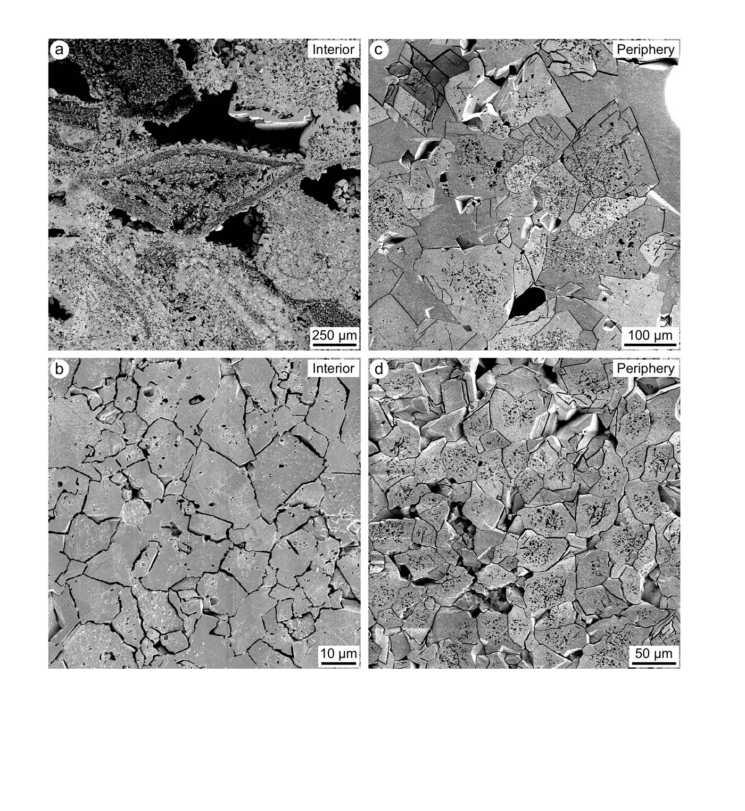
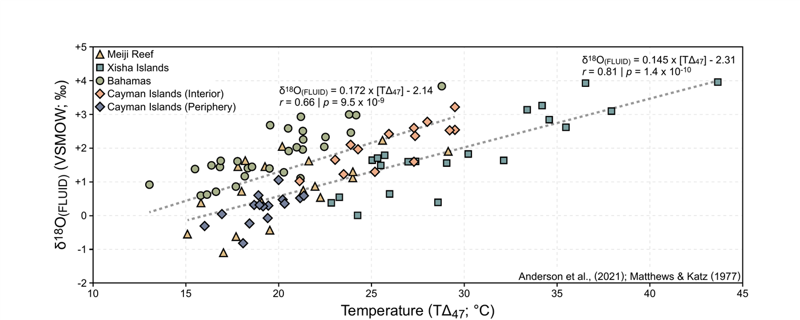
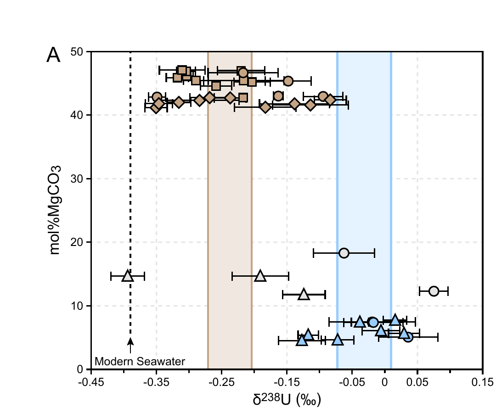

Cenozoic Island Dolostones
A best-case test of the carbonate archive: even where dolomitization looks as close to “textbook” low-temperature, marine as the rock record gets, one geochemical proxy still failed silently while another survived intact.
Overview
Modern examples of low-temperature dolomite formation are rare, which makes Cenozoic “island dolostones” — like those on Grand Cayman and Cayman Brac (British West Indies) — one of the best natural laboratories available for testing how carbonate geochemical proxies hold up during dolomitization. These platforms are young, shallowly buried, and still host active groundwater systems, so the diagenetic fluids responsible for dolomitizing them can be directly characterized rather than inferred.
A well-documented dolomitization front on Grand Cayman gives an unusually clean version of this test. Using carbonate clumped isotopes (Δ47), dolostones along the platform periphery return a formation temperature of 19.1 ± 1.4°C from a fluid with δ18OFLUID = 0.2 ± 0.5‰ VSMOW — indistinguishable from normal modern seawater. Petrographically, the dolomite crystals are clean and well-ordered. By any standard, this is about as close to textbook, low-temperature marine dolomitization as the geological record offers.
Then we measured uranium isotopes (δ238U) in that same dolomitization front. Despite the pristine petrography and unambiguous seawater-temperature signal, δ238U in the dolostones is offset from both modern seawater and the coeval limestone — a clear diagenetic overprint. Cerium anomalies (Ce/Ce*), measured on the same samples, show no such offset at all. Two proxies, same rocks, same fluid history: one survives, one doesn't — and nothing in the texture or the clumped-isotope temperature would have warned us which.
That result rules out a “universal” diagenetic correction and argues for testing each proxy against a known system like this one before trusting it in deep time, where no such independent check is available.
Key Figures


